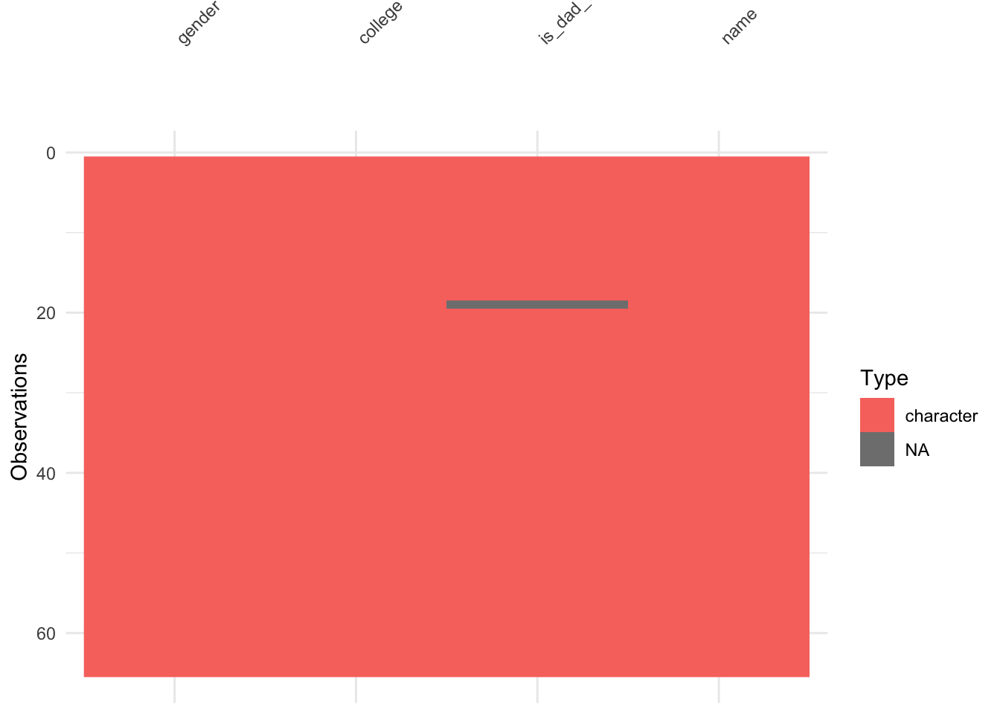
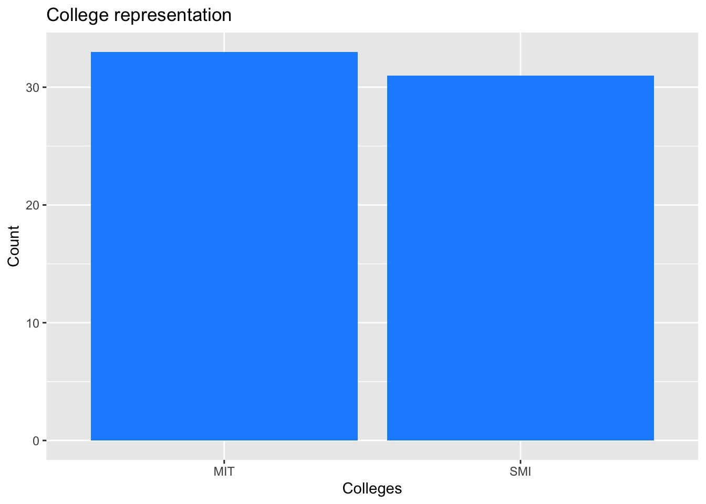
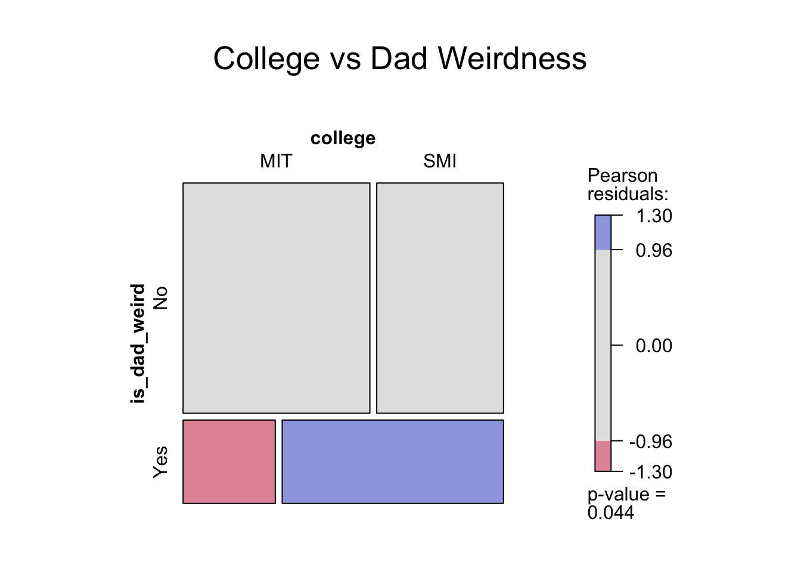

── Attaching core tidyverse packages ──────────────────────── tidyverse 2.0.0 ──
✔ dplyr 1.1.4 ✔ purrr 1.1.0
✔ forcats 1.0.0 ✔ stringr 1.5.2
✔ ggplot2 4.0.0 ✔ tibble 3.3.0
✔ lubridate 1.9.4 ✔ tidyr 1.3.1
── Conflicts ────────────────────────────────────────── tidyverse_conflicts() ──
✖ dplyr::filter() masks stats::filter()
✖ dplyr::lag() masks stats::lag()
ℹ Use the conflicted package (<http://conflicted.r-lib.org/>) to force all conflicts to become errors
Loading required package: scales
Attaching package: 'scales'
The following object is masked from 'package:purrr':
discard
The following object is masked from 'package:readr':
col_factor
Loading required package: ggridges
New to ggformula? Try the tutorials:
learnr::run_tutorial("introduction", package = "ggformula")
learnr::run_tutorial("refining", package = "ggformula")
Registered S3 method overwritten by 'mosaic':
method from
fortify.SpatialPolygonsDataFrame ggplot2
The 'mosaic' package masks several functions from core packages in order to add
additional features. The original behavior of these functions should not be affected by this.
Attaching package: 'mosaic'
The following object is masked from 'package:Matrix':
mean
The following object is masked from 'package:scales':
rescale
The following objects are masked from 'package:dplyr':
count, do, tally
The following object is masked from 'package:purrr':
cross
The following object is masked from 'package:ggplot2':
stat
The following objects are masked from 'package:stats':
binom.test, cor, cor.test, cov, fivenum, IQR, median, prop.test,
quantile, sd, t.test, var
The following objects are masked from 'package:base':
max, mean, min, prod, range, sample, sum
Attaching package: 'skimr'
The following object is masked from 'package:mosaic':
n_missing
Attaching package: 'naniar'
The following object is masked from 'package:skimr':
n_complete
Attaching package: 'janitor'
The following objects are masked from 'package:stats':
chisq.test, fisher.test
Attaching package: 'tinytable'
The following object is masked from 'package:ggplot2':
theme_void
Attaching package: 'crosstable'
The following object is masked from 'package:purrr':
compact
Loading required package: grid
Attaching package: 'vcd'
The following object is masked from 'package:mosaic':
mplot
Loading required package: gnm
Attaching package: 'gnm'
The following object is masked from 'package:lattice':
barley
Attaching package: 'vcdExtra'
The following object is masked from 'package:dplyr':
summariseAre Dads weird?
Paternal weirdness rating is…weird.

About the Data
This data set is derived from the peasants of Manipal University where we wanted to understand if SMI dads embarrass their kids more than MIT dads.
Data Dictionary
- Qualitative Variables
-
gender: Gender of the student where, M = Male, F = Female, NB = Non Binary
-
college: Institute within Manipal University, the peasant belongs to.
-
is_dad_weird: Is the dad perceived as weird or not, categorized by ‘Yes’ and ‘No’
-
name: Name of the student (aka. peasant)
Hypothesis
Do SMI students find their dads to be weirder as compared to MIT?
Something interesting to look for:
Is there a bias in gender when it comes do dad weirdness perception of dads?
Setup
Inspecting the Data
weird_dad_data <- read_csv("~/Documents/R_work/DataRchive/posts/A3_Ashmita/Datasets/3-weird_dads.csv") %>%
janitor::clean_names(case = "snake")Rows: 65 Columns: 4
── Column specification ────────────────────────────────────────────────────────
Delimiter: ","
chr (4): gender, college, is_dad_weird, name
ℹ Use `spec()` to retrieve the full column specification for this data.
ℹ Specify the column types or set `show_col_types = FALSE` to quiet this message.weird_dad_data# A tibble: 65 × 4
gender college is_dad_weird name
<chr> <chr> <chr> <chr>
1 F SMI No Manya
2 F SMI No Sradha
3 M SMI No Arun
4 F SMI Yes Nidhi
5 M MIT No Shaurya
6 M MIT No Pratham
7 M MIT No Jeevan
8 M SMI No Dhruv
9 F SMI Yes Aakrati
10 M SMI Yes Aakrsh
# ℹ 55 more rowsReading the Data
dad_weird_data <- read_csv("~/Documents/R_work/DataRchive/posts/A3_Ashmita/Datasets/3-weird_dads.csv") %>%
janitor::clean_names(case = "snake")Rows: 65 Columns: 4
── Column specification ────────────────────────────────────────────────────────
Delimiter: ","
chr (4): gender, college, is_dad_weird, name
ℹ Use `spec()` to retrieve the full column specification for this data.
ℹ Specify the column types or set `show_col_types = FALSE` to quiet this message.dad_weird_data# A tibble: 65 × 4
gender college is_dad_weird name
<chr> <chr> <chr> <chr>
1 F SMI No Manya
2 F SMI No Sradha
3 M SMI No Arun
4 F SMI Yes Nidhi
5 M MIT No Shaurya
6 M MIT No Pratham
7 M MIT No Jeevan
8 M SMI No Dhruv
9 F SMI Yes Aakrati
10 M SMI Yes Aakrsh
# ℹ 55 more rowsChecking for missing data
dad_weird_data %>%
visdat::vis_miss()
dad_weird_data %>%
visdat::vis_dat()
Seems like some peasants were boggled by the question ‘Is your dad weird?’ and couldn’t comprehend to answer. Hence removing the entries for these confused souls
dad_weird_mod1 <- dad_weird_data %>%
naniar::replace_with_na_all(condition = ~ .x %in% common_na_strings) %>%
drop_na()
dad_weird_mod1# A tibble: 64 × 4
gender college is_dad_weird name
<chr> <chr> <chr> <chr>
1 F SMI No Manya
2 F SMI No Sradha
3 M SMI No Arun
4 F SMI Yes Nidhi
5 M MIT No Shaurya
6 M MIT No Pratham
7 M MIT No Jeevan
8 M SMI No Dhruv
9 F SMI Yes Aakrati
10 M SMI Yes Aakrsh
# ℹ 54 more rowsOne entry was dropped from the data set.
Munging the Data
Factoring ‘gender’ and ‘is_dad_weird’
dad_weird_mod2 <- dad_weird_mod1 %>%
mutate(gender = as.factor(gender),
is_dad_weird = as.factor(is_dad_weird))Examining the Data
Taking a glimpse of the Data
glimpse(dad_weird_mod2)Rows: 64
Columns: 4
$ gender <fct> F, F, M, F, M, M, M, M, F, M, F, M, F, F, M, M, F, M, M, …
$ college <chr> "SMI", "SMI", "SMI", "SMI", "MIT", "MIT", "MIT", "SMI", "…
$ is_dad_weird <fct> No, No, No, Yes, No, No, No, No, Yes, Yes, Yes, Yes, No, …
$ name <chr> "Manya", "Sradha", "Arun", "Nidhi", "Shaurya", "Pratham",…Counting gender
dad_weird_mod2 %>%
dplyr::count(gender) %>%
tt()| gender | n |
|---|---|
| F | 32 |
| M | 31 |
| NB | 1 |
dad_weird_mod2 %>%
gf_bar(~gender, fill = "purple") %>%
gf_labs(title = "Gender distribution",
x = "Gender",
y = "Count")
Observation
- There is nearly equal representation between Female (32) and Male (31) students
- Since the representation of Non-binary is one and not significant, for gender related tests, it will be excluded.
Counting representation for each college
dad_weird_mod2 %>%
dplyr::count(college) %>%
tt()| college | n |
|---|---|
| MIT | 33 |
| SMI | 31 |
dad_weird_mod2 %>%
gf_bar(~college, fill = "dodgerblue") %>%
gf_labs(
title = "College representation",
x = "Colleges",
y = "Count"
)
Observation
Both colleges are nearly equally represented, hence there is no bias in the data collection
The 64-student sample is perfect for college-wise analysis with minimal sampling bias
Counting is_dad_weird
dad_weird_mod2 %>%
dplyr::count(is_dad_weird) %>%
tt()| is_dad_weird | n |
|---|---|
| No | 47 |
| Yes | 17 |
dad_weird_mod2 %>%
gf_bar(~is_dad_weird, fill = "skyblue") %>%
gf_labs(
title = "Do students think their Dads are weird?",
x = "Is Dad weird?",
y = "Count"
)
Observation
- Huh! Most students are NOT finding their dad weird, now that’s weird.
- Strong 3:1 Ratio: “Normal” dads significantly outnumber “weird” dads
How Dad weirdness relates to Gender
dad_weird_mod2 %>%
filter(gender != "NB") %>%
count(across(c("gender", "is_dad_weird"))) %>%
tt()| gender | is_dad_weird | n |
|---|---|---|
| F | No | 23 |
| F | Yes | 9 |
| M | No | 24 |
| M | Yes | 7 |
dad_weird_mod2 %>%
filter(gender != "NB") %>%
gf_bar(~gender, fill = ~is_dad_weird, position = "fill") %>%
gf_labs(
title = "Gender vs. Dad Weirdness",
subtitle = "Do sons and daughters rate dad-cringe differently?",
x = "Gender",
y = "Proportion"
)
Observation
Nearly identical gender patterns
23 Females and 24 Males say that there Dads are not weird
Dad weirdness for colleges
dad_weird_mod2 %>%
filter(gender != "NB") %>%
count(across(c("college", "is_dad_weird"))) %>%
tt()| college | is_dad_weird | n |
|---|---|---|
| MIT | No | 28 |
| MIT | Yes | 4 |
| SMI | No | 19 |
| SMI | Yes | 12 |
Visualizing in a Dodge and Proportion Bar graph
dad_weird_mod2 %>%
gf_bar(~college, fill = ~is_dad_weird, position = "dodge") %>%
gf_labs(
title = "Dad Weirdness for SMI & MIT",
x = "College",
y = "Count"
)
Let’s check their proportions
dad_weird_mod2 %>%
gf_bar(~college, fill = ~is_dad_weird, position = "fill") %>%
gf_labs(
title = "Dad Weirdness: SMI vs MIT Showdown",
x = "College",
y = "Proportion",
fill = "Weird Dad?"
)
Observation
There seems to be a distinct divide among colleges
MIT Students: 28 of 32 say dads are NOT weird (too good to be true?)
SMI Students: 19 of 31 say dads are NOT weird (here’s the weirdness!)
SMI students are 3x more likely to report weird dads compared to MIT
Checking Weridness and College relation statistically by a Mosaic Plot
vcd::structable(college ~ is_dad_weird, data = dad_weird_mod2) %>%
vcd::mosaic(shade = TRUE, legend = TRUE,
main = "College vs Dad Weirdness",
gp = shading_max)
Observation
The p-value of 0.042 provides statistically significant evidence that there is a real difference in dad weirdness perceptions between MIT and SMI students.
There appears to be something about the SMI environment or student demographics that leads to higher rates of paternal “weirdness” perception compared to the MIT campus culture.
Conclusion from EDA
This analysis reveals a clear and statistically significant pattern in how students perceive their fathers:
1. College matters most
Statistically Significant: p = 0.042 confirms this is a real pattern, not random chance
Cultural Divide: Different campus environments appear to shape paternal perception dramatically
2. Gender doesn’t matter
- Both male and female students overwhelmingly see dads as normal
3. Dad approval
- 73% of students give their fathers a “normal” rating
Inference
Null Hypothesis: There is no difference in dad weirdness perceptions between MIT and SMI students - any observed variation occurs by random chance alone.
Performing Chi-Square Test
Creating contingency table & running chi-square test
contingency_table <- table(dad_weird_mod2$college, dad_weird_mod2$is_dad_weird)
xq_test_object <- mosaic::xchisq.test(contingency_table)
Pearson's Chi-squared test with Yates' continuity correction
data: x
X-squared = 3.4202, df = 1, p-value = 0.0644
28 5
(24.23) ( 8.77)
[0.44] [1.22]
< 0.76> <-1.27>
19 12
(22.77) ( 8.23)
[0.47] [1.30]
<-0.79> < 1.31>
key:
observed
(expected)
[contribution to X-squared]
<Pearson residual>- The p-value of 0.0644 indicates borderline significance - while not statistically significant at the conventional 0.05 level, it strongly suggests a meaningful pattern where SMI students consistently report more dad weirdness than expected, while MIT students report less.
Extracting observed chi-square statistic
xq_test_object %>%
broom::tidy() %>%
select(statistic) %>%
as.numeric() -> X_squared_observed
X_squared_observed[1] 3.420189Determining the Chi-Square critical value
X_squared_critical <- qchisq(
p = .05,
df = (2 - 1) * (2 - 1),
lower.tail = FALSE
)
X_squared_critical[1] 3.841459Bbserved value: 3.420189
Critical value: 3.841459
Decision: Since 3.42 < 3.84, your test statistic does not exceed the critical threshold
Visualization for the critical value
ggplot2::theme_set(new = ggplot2::theme_minimal())
mosaic::xqchisq(
p = 0.95, df = 1,
return = c("plot"), verbose = FALSE,
system = "gg"
) %>%
gf_labs(
title = "Chi-Square Test: College vs Dad Weirdness",
x = "Chi-Square Value",
y = "Density"
) %>%
gf_vline(
xintercept = X_squared_observed,
color = "red", linewidth = 1
) %>%
gf_vline(
xintercept = X_squared_critical,
color = "dodgerblue",
linewidth = 1
) %>%
gf_annotate(
x = X_squared_observed - 1, y = 0.25,
geom = "label", label = "Observed\nChi-Square",
fill = "red", alpha = 0.3
) %>%
gf_annotate("curve",
x = X_squared_observed - 1, y = 0.23,
xend = X_squared_observed - 0.1, yend = 0.15,
linewidth = 0.5, curvature = 0.3,
arrow = arrow(length = unit(0.15, "cm"))
) %>%
gf_annotate(
x = X_squared_critical + 1, y = 0.25,
geom = "label", label = "Critical\nChi-Square",
fill = "lightblue", alpha = 0.3
) %>%
gf_annotate("curve",
x = X_squared_critical + 1, y = 0.23,
xend = X_squared_critical + 0.1, yend = 0.15,
linewidth = 0.5, curvature = -0.3,
arrow = arrow(length = unit(0.15, "cm"))
)
Observed chi-square value falls in the “fail to reject” region of the distribution, meaning the difference in dad weirdness perceptions between MIT and SMI, while suggestive, is not statistically significant at the conventional 0.05 level.
The pattern observed (SMI students reporting more dad weirdness) could reasonably occur by random chance about 6.4% of the time (matching the earlier p-value of 0.0644).
Final interpretation
Despite the popular “cringey dad” stereotype, most students (73%) see their fathers as completely normal. The most interesting difference appears between institutions: although not quite statistically significant (p = 0.064), the 27-point gap between MIT (88%) and SMI (61%) is hard to ignore. The chi-square result (3.42 vs. 3.84) falls just short of the cutoff, but the consistent pattern and effect size suggest something real may be happening, worth exploring further.